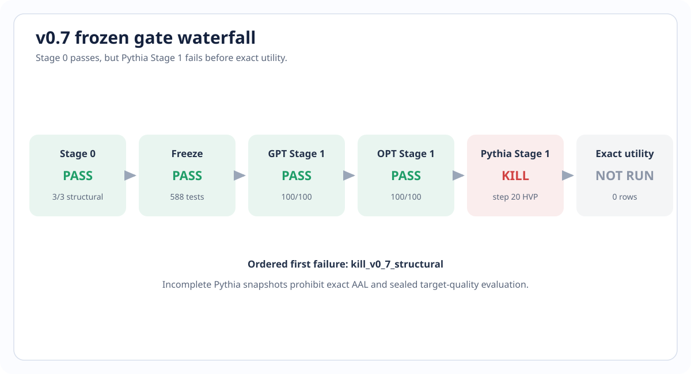
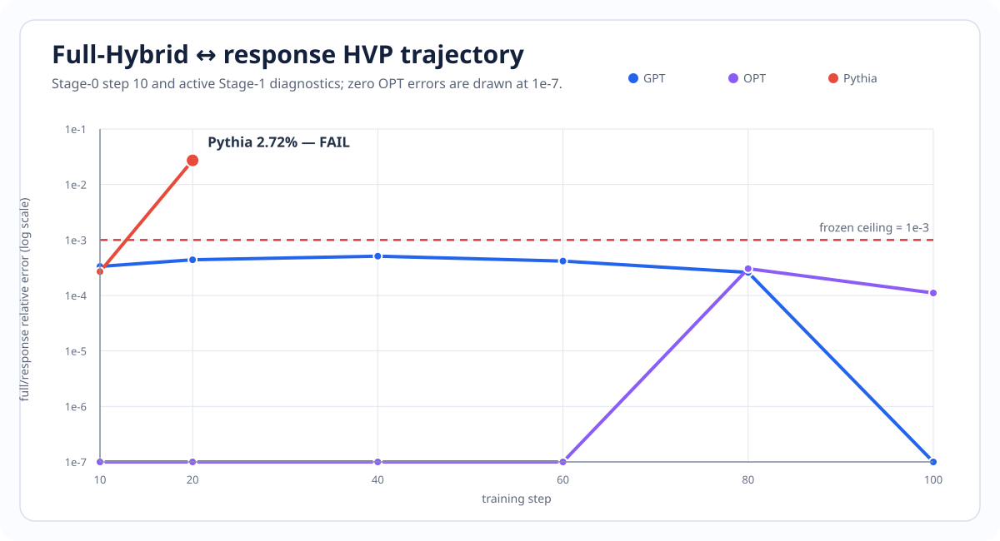
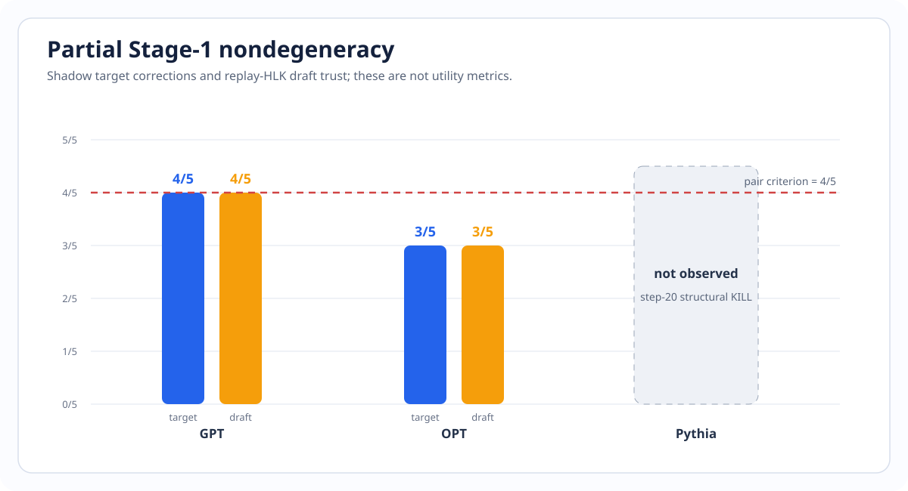
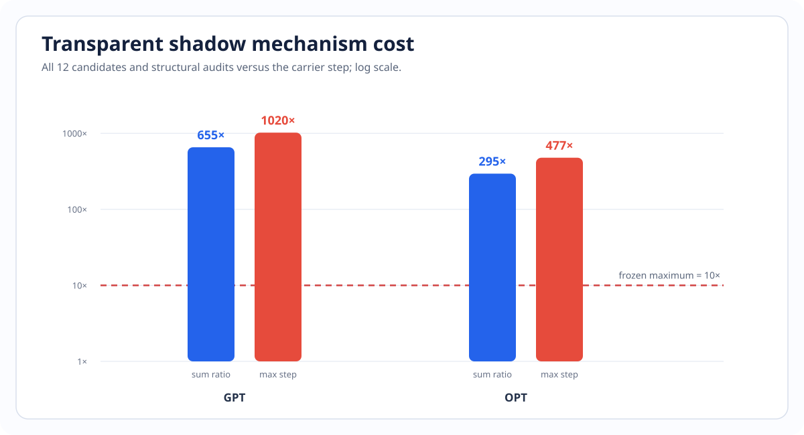

Bilevel CE-Guard v0.7
독립 pretrained AR target과 drafter를 draft-response bilevel update로 함께 고려하되 target CE와 Adam state를 보호하려 했다. 구조 preflight는 통과했지만, evolved Pythia state에서 수치 계약이 결정론적으로 깨져 utility를 열기 전에 중단했다.
1. 포함하는 설정
이 연구가 묻는 것
두 모델이 완전히 독립일 때, target이 현재 draft logits를 직접 쫓지 않고 가상 draft 학습 반응을 개선하도록 만들 수 있는가?
범위 밖
MEDUSA/EAGLE native head, shared backbone·embedding·hidden state, scratch foundation pretraining, flow/diffusion loss는 포함하지 않는다.
| Panel | Target | Drafter | 공유 |
|---|---|---|---|
| GPT | GPT-2 | DistilGPT-2 | token ID compatibility만 |
| OPT | OPT-350M | OPT-125M | token ID compatibility만 |
| Pythia | Pythia-410M | Pythia-70M | token ID compatibility만 |
Backbone, representation, LM head, rank-8 LoRA, gradient, optimizer와 scheduler는 모두 분리했다. Base weight는 고정하고 FP32 eager, WikiText-103, sequence length 64, AdamW로 짧은 adaptation을 수행했다.
2. 방법: drafter 자체가 아니라 draft response를 움직인다
Main target correction은 CE-only applied step의 0.1배 반지름 안에서
고정된 \(\lambda\) grid를 평가한다. Draft trust나 target CE guard 중 하나라도
실패하면 두 leg를 함께 (CE-only, live-H1)로 되돌린다.
Stage 1에서는 이 후보들을 carrier에 적용하지 않았다.
3. Utility-blind Stage 0은 통과했다
| Pair · step 10 | Full HVP norm | Response norm | Cosine | Relative error |
|---|---|---|---|---|
| GPT | 8.6113e-5 | 8.6112e-5 | 0.9999999444 | 3.3361e-4 |
| OPT | 2.7022e-3 | 2.7022e-3 | 1.0000000000 | 0 |
| Pythia | 3.6389e-2 | 3.6389e-2 | 0.9999999639 | 2.6896e-4 |
Direct/functional response, functional/materialized AdamW, CPU FP64 toy oracle, CE projection, target Adam isolation, RNG/nonmutation과 atomic fallback이 통과했다. 실제 pretrained FP32 finite difference는 conditioning descriptor로만 남겼다. 이것은 세 관측 state의 구조 PASS이지, 이후 trajectory나 utility 보장이 아니다.
4. Stage 1: Pythia step 20에서 fail loud

| Pythia step 20 trace | 관측 | Frozen 기준 | 판정 |
|---|---|---|---|
| Full/response cosine | 0.9996316201 | ≥ 0.999 | PASS |
| Full HVP norm | 0.0199575462 | finite, nonzero | PASS |
| Response HVP norm | 0.0199153586 | finite, nonzero | PASS |
| Difference norm | 0.0005427832 | 보고값 | — |
| Relative norm error | 0.0271968899 | ≤ 0.001 | FAIL · 27.2× |

| Pair | Carrier | Diagnostics | Snapshots | 상태 |
|---|---|---|---|---|
| GPT | 100/100 | 6/6 | 60/60 | complete |
| OPT | 100/100 | 6/6 | 60/60 | complete |
| Pythia | 19/100 | 1/6 | 0/60 | step-20 KILL |
5. GPT/OPT partial mechanism evidence
아래는 candidate가 얼마나 자주 non-fallback action을 만들었는지의 shadow 진단이다. Acceptance나 target quality 성능이 아니다.


6. 무엇이 확인됐고, 무엇은 아직 모르는가
확인된 것
- 상대오차 gate가 27.2배 초과했다.
- 두 replay의 8개 failure-frame field가 완전히 동일하다.
- Full과 response가 별도 forward·별도 reduction graph를 쓴다.
- 현재 bridge는 response-vs-response만 검사한다.
유일하게 식별되지 않은 것
- FP32 reduction/backward ordering의 기여
- TV tie 또는 sign-boundary의 기여
- TF32/CUDA kernel의 체계적 근사
- 실제 pretrained graph의 FP64 closure
고정된 TV sign cell에서는 \(\mathrm{TV}(p,q)=\frac12\sum_i s_i(p_i-q_i)\)가 target-only와 draft-only 항으로 분리돼 mixed partial은 0이다. 하지만 \(p_i=q_i\) boundary에서는 classical Hessian이 정의되지 않는다. 현재 trace는 deterministic discrepancy를 입증하지만 단일 micro-kernel 원인을 입증하지 않는다.
7. 근거 기반 다음 방향: canonical cross-derivative firewall
Tolerance를 완화하거나 Pythia를 제외하지 않는다. 먼저 한 번의 common forward에서 component를 만들고 algebra closure를 검증한다.
L_response, L_TV,
L_full=L_response+L_TV를 만든다.g_full=grad_phi L_full과 현재 draft Adam state로
v_Adam을 계산한다.Separate/common forward × duplicated/canonical reduction 2×2, \(h_{\rm full}\), \(h_{\rm response}\), \(h_{\rm TV}\) closure, TV tie/ULP 통계, TF32-off·captured-logit FP64, 세 아키텍처의 evolved step {10,20,40}를 utility 전에 통과해야 한다. 비용은 main-only forward reuse로 다시 측정하고 최대 10×를 넘으면 별도로 KILL한다.
8. 해석 한계
- Engineering training seed는 99 하나다. Pair·step·prompt는 독립 replicate가 아니다.
- 100-step LoRA adaptation을 scratch foundation pretraining으로 일반화하지 않는다.
- Stage-1 shadow candidate는 적용되지 않아 cumulative co-adaptation을 입증하지 않는다.
- FP64 oracle는 작은 smooth primitive이며 실제 Pythia graph의 magnitude oracle가 아니다.
- Selection seed 6–8은 열지 않았고 utility claim은 없다.
9. 공개 검증 자료와 참고 문헌
인접 연구
- Leviathan et al. (2023) — exact speculative decoding
- Samarin et al. (2026), LK Losses — acceptance-oriented draft loss
- Online Speculative Decoding — fixed-target online draft adaptation
- Direct Alignment of Draft Model — draft-only alignment
- Draft-OPD — target-assisted on-policy draft replay
- Halfway Speculative Decoding — EAGLE-style joint target/head training
- Franceschi et al. (2018) — differentiating optimization dynamics
- PCGrad — conflicting-gradient projection
이 페이지는 peer-reviewed 결과가 아닌 research snapshot이다. Model adapter tensor는 공개 저장소에 포함하지 않았고, receipt·aggregate CSV와 시각화만 공개한다.